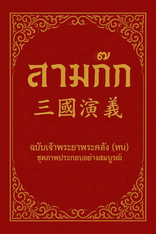
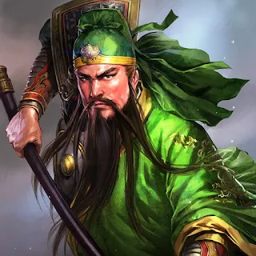
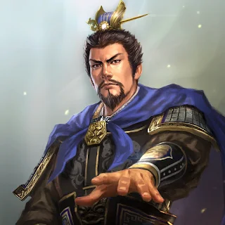
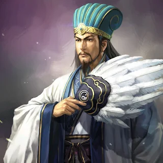

เรื่องย่อ
สามก๊กเป็นเรื่องราวความขัดแย้งและ การต่อสู้เพื่ออำนาจในช่วงปลาย ราชวงศ์ฮั่นของจีน
เรื่องราวกล่าวถึงการต่อสู้ระหว่าง วุยก๊ก จ๊กก๊ก และง่อก๊ก พร้อมทั้งถ่ายทอดเรื่องราวของ ผู้นำ ขุนศึก และนักวางแผน ที่มีความสามารถ

"มหากาพย์จีนคลาสสิกที่เต็มไปด้วย
เรื่องราวของสงคราม การเมือง กลยุทธ์ และการช่วงชิงอำนาจ"
สามก๊กเป็นเรื่องราวความขัดแย้งและ การต่อสู้เพื่ออำนาจในช่วงปลาย ราชวงศ์ฮั่นของจีน
เรื่องราวกล่าวถึงการต่อสู้ระหว่าง วุยก๊ก จ๊กก๊ก และง่อก๊ก พร้อมทั้งถ่ายทอดเรื่องราวของ ผู้นำ ขุนศึก และนักวางแผน ที่มีความสามารถ
สามก๊กไม่ได้มีเพียงเรื่องราวของสงคราม และการแข่งชิงอำนาจเท่านั้น แต่ยังสะท้อน ความคิดของผู้คน การวางแผน การตัดสินใจ และความสัมพันธ์ระหว่างผู้นำกับผู้คน
เรื่องราวของตัวละครแต่ละคนทำให้เห็นว่า ความสามารถ ความซื่อสัตย์ ความฉลาด และการรู้จักใช้คน ล้วนมีผลต่อความสำเร็จ
บุคคลสำคัญที่มีบทบาทต่อเรื่องราวของสามก๊ก

ผู้นำจ๊กก๊ก ผู้มีความเมตตาและมุ่งมั่น

นักรบผู้มีชื่อเสียงด้านความกล้าหาญ และความซื่อสัตย์

ผู้นำวุยก๊ก ผู้มีความสามารถด้านการวางแผน

นักวางแผนและที่ปรึกษาคนสำคัญของเล่าปี่
การคิดอย่างรอบคอบก่อนตัดสินใจ สามารถช่วยลดความผิดพลาดได้
การรู้จักความสามารถของแต่ละคน และเลือกใช้คนให้เหมาะสม
ผู้นำต้องรู้จักตัดสินใจ และรับผิดชอบต่อผลที่เกิดขึ้น
สามก๊กไม่ได้เป็นเพียงเรื่องราวของสงคราม แต่ยังเป็นหนังสือที่ทำให้เราได้เรียนรู้ เกี่ยวกับกลยุทธ์ การตัดสินใจ ภาวะผู้นำ และความสัมพันธ์ระหว่างผู้คน